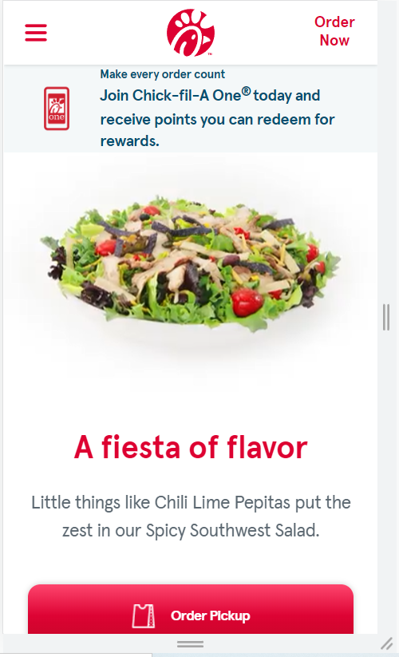

WDD 230: Assignment Portal
- Visual Hierarchy: Chick-fil-a 
- Rule of Thirds: BYU-Idaho Home Page
- White Space and Clean Design: Living Life Counseling
The Visual Hierarchy is represented by the order in which the user focuses. The largest item on the screen is the salad. Then it might shift the the headline, the the order button, then the header.
The rule of thirds here is found in the pictures of the photographer and the graduating woman. The photographer is not the center of the photo and neither is the woman. They are more at their respective 'thirds' mark as they are slightly displaced from the center.
A relatives counseling website demonstrates good whitespace and picture usage. They aren't affraid to have whitespace and from my perspective they pull it off quite well.